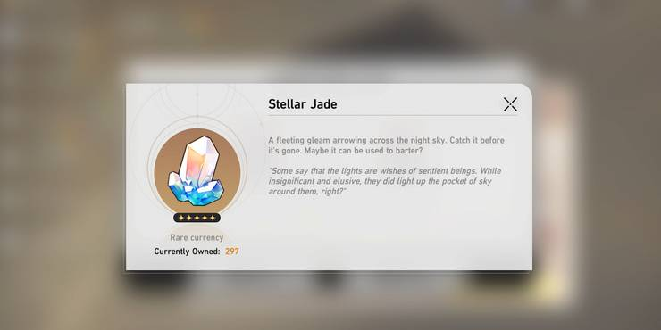
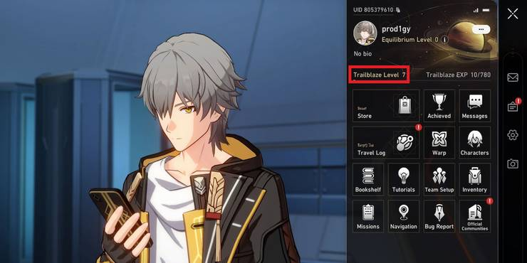
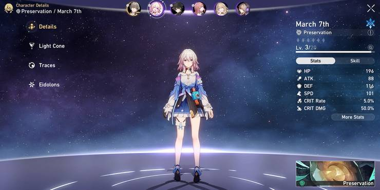
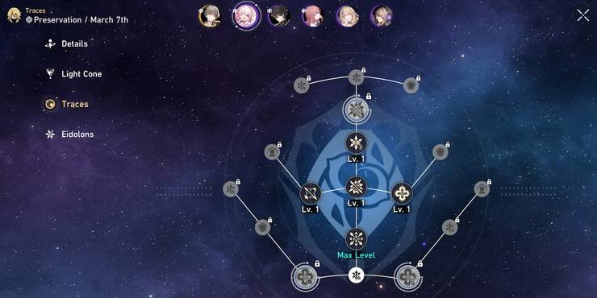
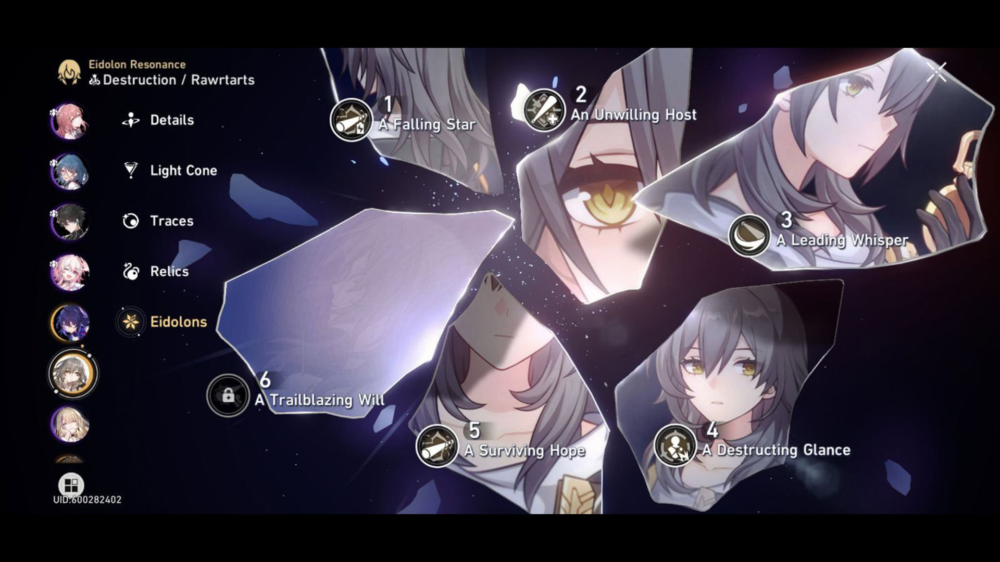
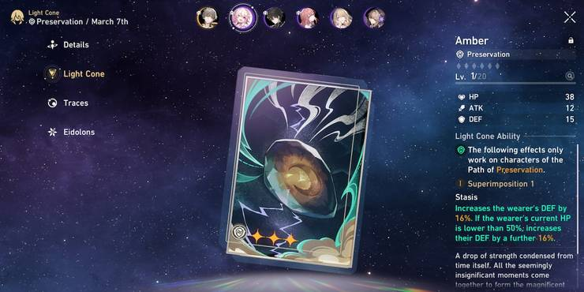
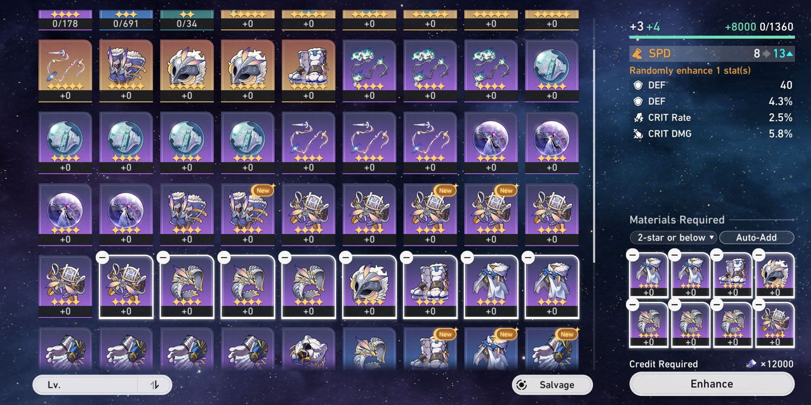
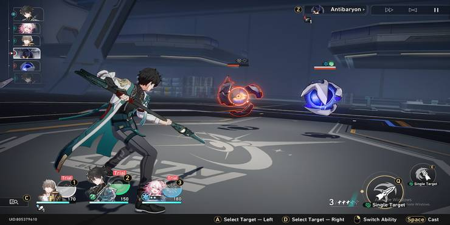

Terminology and In-game Items
This part show the Terminology and In game items Description
This part will Show some important items that you need to used for the gameplay

Currency
Credit- used for buying from shops and upgrading characters
Stellar Jade- used for buying from shops and upgrading characters
Oneric Shards- used for buying from shops and upgrading characters
Star Rail Special Pass- used for buying from shops and upgrading characters
Star Rail Passes- used for buying from shops and upgrading characters
Undying Starlight- used for buying from shops and upgrading characters
Undying Embers- used for buying from shops and upgrading characters
Warps- used for buying from shops and upgrading characters
Account Information
Trailblazer Level- Player account level
Equilibrium Level- Game difficulty level
Trailblazer Power- Player stamina. Completely refills after every 18-hour
Characters
  Path- Character Roles
Traces- Character skill level
Elements- Types of damage that each character deals
Eidolon- Upgrades that are available after obtaining duplicate characters. Similar to Constellations from Genshin Impact
Elements Types of damage that each character dealEquipment
 Relics- Equipment used by characters. Similar to Artefacts from Genshin Impact
Light Cones- Primary weapons used by different characters
Combat
Talent- Character passive ability
Basic ATK- The primary attack of each character. This attack can be used at any point in the game.
Skill- The secondary attack of each character. This attack needs skill points to be used.
Ultimate- The most powerful attack of each character. Players must charge up their ultimate before using them.
Technique- The ability that can be used before battles
Toughness- An enemy-only stat. Depleting the toughness completely will trigger the Weakness Break effects.